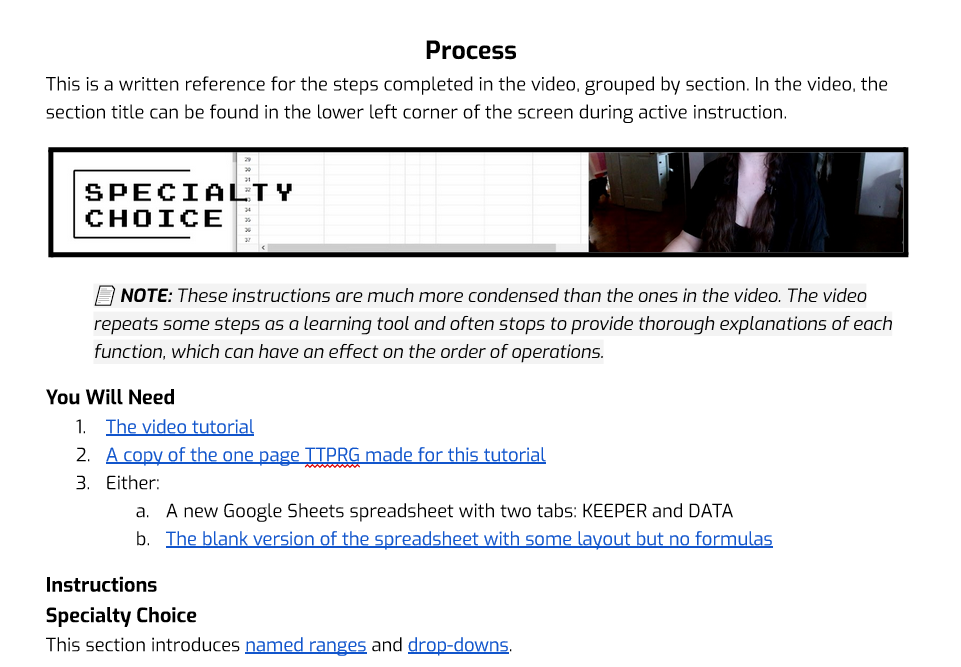
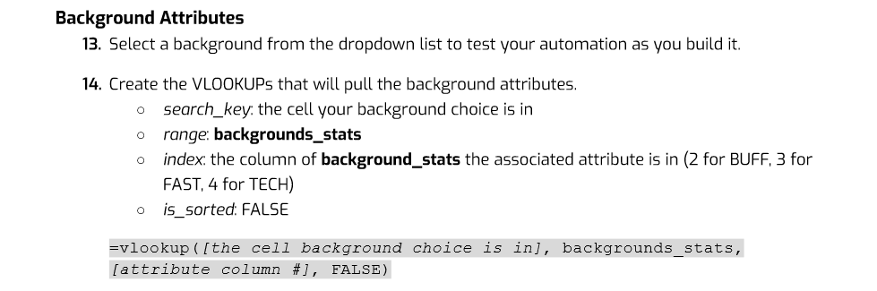
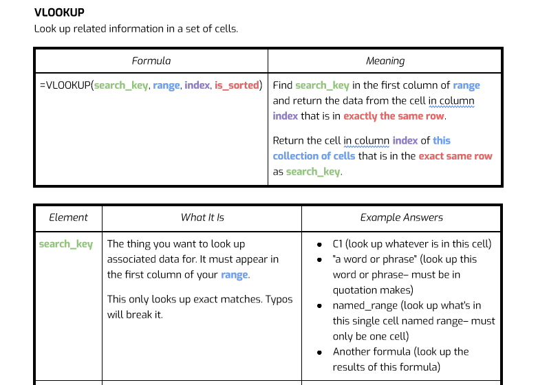
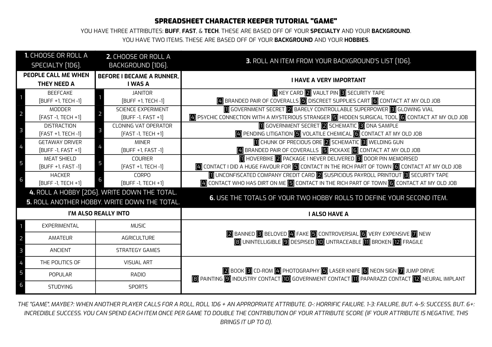

This documentation was created as a term project for COMM 2206: Writing for the Computer Industry, taken as part of the Technical Writing Certificate at the British Columbia Institute of Technology.
As explained in the documentation rationale synthesised from my user research, the intended audience prefers video content and learns best through hands-on experience. To meet both of those needs, I created a video tutorial that walks the user through the creation of a project, explaining every step along the way to ensure full understanding. The final documentation, entitled "Automation For Single Tab Character Keepers In Google Sheets", consists of four parts:
My focus in this material is teaching basic, fundamental tools in a way that gives genuine understanding, forming skill building blocks that can be called on for the user's future projects. The video embedded below showcases an example section from 8:27 to 9:42.
This is the corresponding section of the accompanying "cheat sheet":

User research also showed that the intended audience is largely at a novice level when it comes to coding. While building automation in a spreadsheet isn't as complicated as programming software from scratch, it requires some similar technical skills. To help keep the audience engaged with material they may otherwise find intimidating, the tone of the video is humorous and positive, while still maintaining a high standard of instruction and explanation.
This 20 page Google Doc includes written instructions, formulas that can be copied to avoid the frustration of typing everything off of a screen, and in-depth explanations of how each formula used in the automation process works.
  This project is focused on building a digital play aid for a tabletop roleplaying game. At the beginning of the video, the user is directed to a website where they can download the rules of the game to use as a reference as they build the project alongside the instructor. This game was created specifically for the tutorial in order to showcase as many basic functions of automation as possible. Creating something that met that goal while being recognisable as a game so that the functions could be presented in the correct context for the audience was an incredible exercise in purpose and brevity.
Using Carrd, I created a simple interactive mock-up of the site that could host these materials.

The website also linked to the final product created in the tutorial for experimentation and direct comparison.